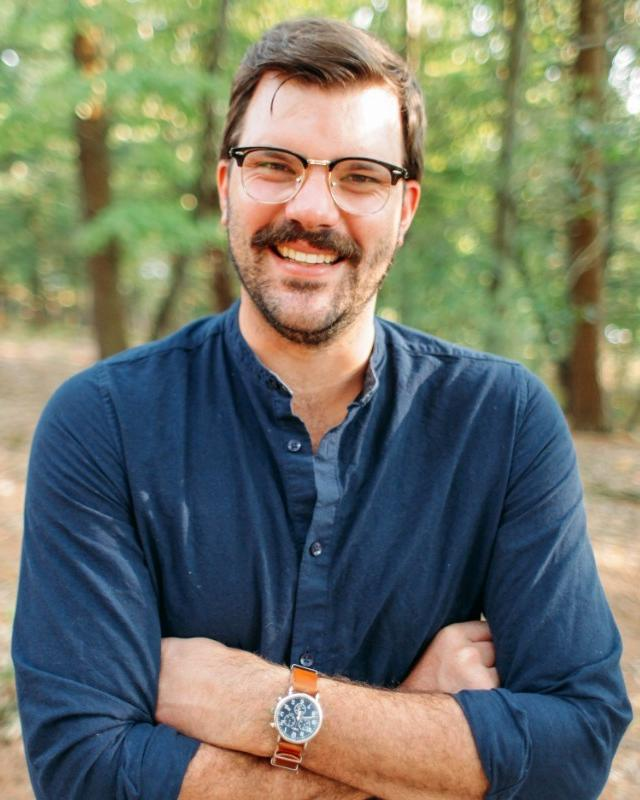
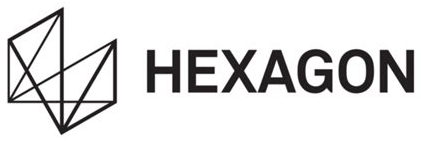

Newlab
Experience in environments where diverse stakeholders, programs, and operating priorities must connect.
Riley Hall, Founder & Principal
Your company has outgrown informal coordination. I find where execution breaks between functions, decisions, systems, and people, then install just enough structure to move fast again.
01Sound familiar?
Growth has outpaced the company’s operating system and the founder is becoming the coordination layer.
Good teams are working hard, but handoffs, priorities, or decision ownership are unclear.
A company needs to move from founder-led execution to a repeatable management cadence without adding bureaucracy.
Commercial performance is constrained by pricing, lifecycle, pipeline, forecasting, or cross-functional seams rather than demand alone.
Leadership needs an embedded operator to diagnose the problem, design the mechanism, and stay through implementation.
02Where I help
Clarify roles, interfaces, decision rights, escalation paths, and where work should live.
Improve pricing, forecasting, customer lifecycle, revenue processes, resource allocation, and operating discipline.
Build the KPIs, dashboards, planning rhythms, operating reviews, and accountability mechanisms leaders need to run the business.
Lead high-stakes work that spans Sales, Product, Operations, Finance, Customer Success, and executive teams.
Turn recurring administrative work and institutional knowledge into repeatable workflows while preserving human judgment where it matters.
03How I work
Map the real operating system: where decisions stall, information breaks, incentives conflict, and leadership is compensating with heroics.
Build the minimum viable mechanism: roles, decision rights, workflows, metrics, operating cadence, and systems that fit the company’s stage.
Work alongside the team through implementation, adoption, and iteration until the mechanism is usable without depending on the consultant.

04About
I’m a mechanical engineer turned senior operator with an MBA. I’ve spent my career inside the companies where coordination breaks first: venture ecosystems, SaaS and digital manufacturing, industrial automation, and enterprise transformation.
I started Organizational Joinery after seeing too many excellent people get burnt out by carrying too much in an unclear operating environment.

05 Experience & perspective
My experience spans venture ecosystems, digital manufacturing, industrial technology, and commercial operations. The through-line is working where teams, workflows, and decisions need to function together.
Experience in environments where diverse stakeholders, programs, and operating priorities must connect.
Experience with the commercial and operational interfaces required to serve customers in complex businesses.
Perspective from larger industrial organizations, where coordination and execution span functions and systems.
These are summaries of operating environments, not claims of specific project outcomes. Detailed examples can be discussed directly.
06 Ways to engage